Master multi-panel visual architecture in Matplotlib: create 1x2, 2x2 and irregular GridSpec layouts, synchronize axes with sharex and sharey, iterate over axes arrays, configure secondary scales (twinx/twiny), and build professional executive dashboards.
Real-world data science mein ek single graph aksar poori story explain nahi kar sakta. Agar aap ek hi plot par student ke marks (0-100%), attendance (0-100%), aur weekly study hours (10-25 hrs) sab ek sath draw kar denge, toh reader confusing scales aur overlapping lines mein ulajh jayega.
Matplotlib ke architectural hierarchy ke teen core components samajhein:
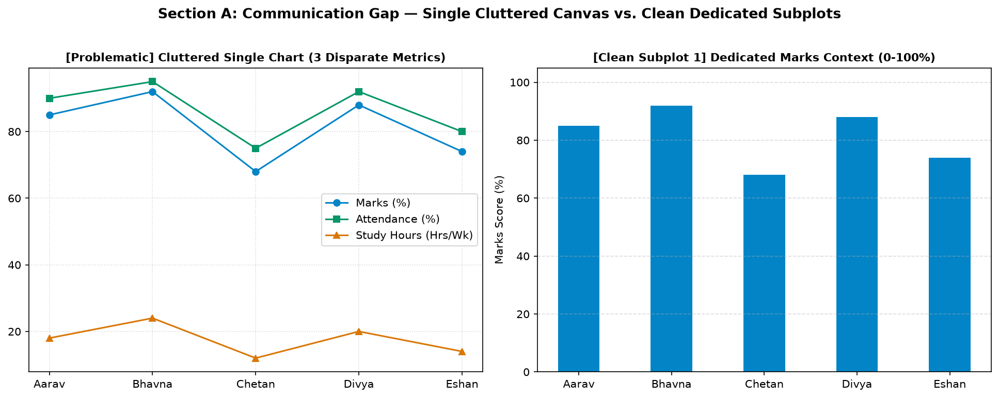
Figure 14.1: Left: cluttered single chart with 3 disparate metrics fighting for visual attention. Right: dedicated clean subplot providing focused, clear context.
Matplotlib mein subplots create karne ka standard, production-ready tareeqa hai plt.subplots(nrows, ncols):
import matplotlib.pyplot as plt
# 1. Single Axes
fig, ax = plt.subplots()
# 2. Side-by-side pair (1 row, 2 columns)
fig, (ax1, ax2) = plt.subplots(1, 2, figsize=(12, 4.5))
# 3. 2x2 Grid (2 rows, 2 columns)
fig, axes = plt.subplots(2, 2, figsize=(12, 8))Dekhiye kaise 1 row aur 2 columns ka subplot pair revenue aur customer orders ko side-by-side cleanly correlate karta hai:
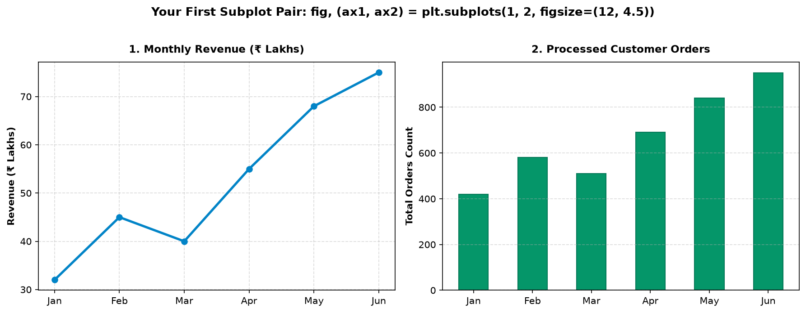
Figure 14.2: Side-by-side subplot pair. Left panel plots Monthly Revenue (Lakhs ₹), right panel plots Processed Orders. Both share a common figure title.
Jab aap plt.subplots(nrows, ncols) call karte hain jahan rows aur columns dono > 1 hote hain (e.g. 2x2 grid), toh Matplotlib axes ko ek 2D NumPy array ke roop mein return karta hai:
| Subplot Position | 2D Array Index | Flattened 1D Index | Visual Location |
|---|---|---|---|
| Panel 1 | axes[0, 0] |
axes_flat[0] |
Top-Left quadrant |
| Panel 2 | axes[0, 1] |
axes_flat[1] |
Top-Right quadrant |
| Panel 3 | axes[1, 0] |
axes_flat[2] |
Bottom-Left quadrant |
| Panel 4 | axes[1, 1] |
axes_flat[3] |
Bottom-Right quadrant |
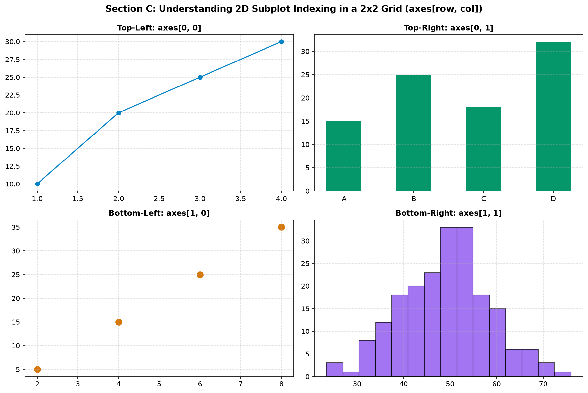
Figure 14.3: Visualizing 2D grid coordinates: axes[0, 0] (top-left), axes[0, 1] (top-right), axes[1, 0] (bottom-left), axes[1, 1] (bottom-right).
axes.flatten() ya axes.ravel() use karein:
for ax in axes.flatten():
ax.grid(True, linestyle='--', alpha=0.4)Ek Figure ke andar har subplot ek completely independent universe hota hai. Ek subplot line chart ho sakta hai, dusra bar chart, teesra scatter plot aur choutha histogram—har ek ka apna title, colors, limits, aur grid styling ho sakti hai:
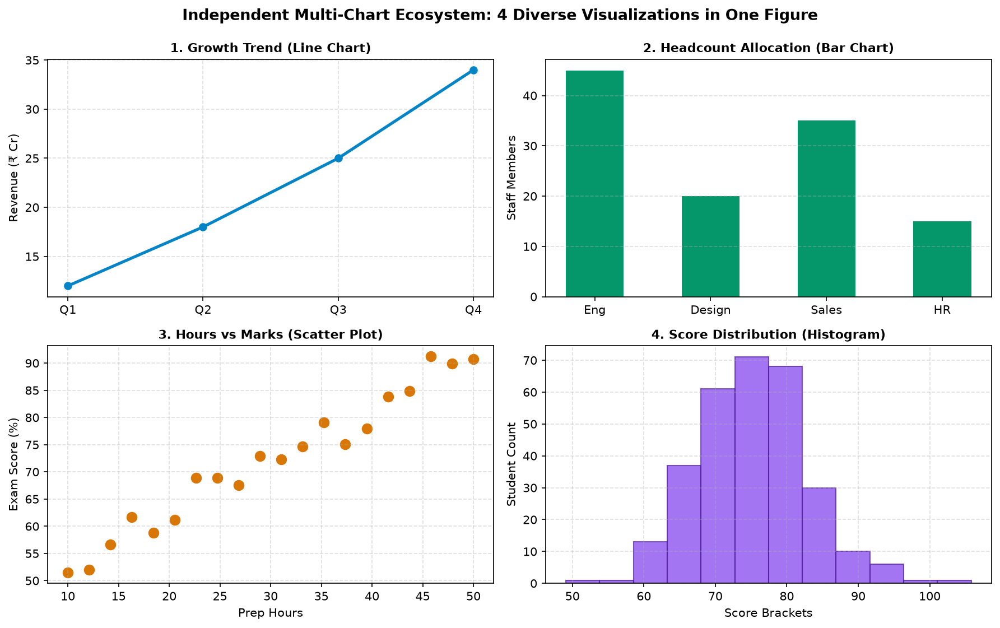
Figure 14.4: 4 diverse visualizations in one cohesive figure. Growth Trend (Line), Headcount (Bar), Hours vs Marks (Scatter), and Score Spread (Histogram).
Jab aap do competing stores ya do student groups ka data side-by-side compare karte hain, toh agar unke Y-axes alag scale par honge, toh reader galat visual conclusion nikal lega!
Passing sharey=True ya sharex=True dono plots ke scale ko synchronize kar deta hai:
# Synchronize vertical heights for fair branch sales comparison
fig, (ax1, ax2) = plt.subplots(1, 2, figsize=(12, 4.5), sharey=True)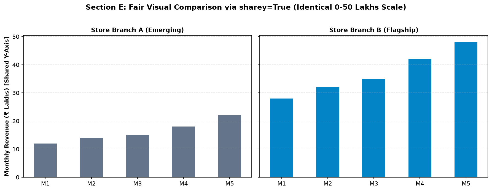
Figure 14.5: Fair comparison via sharey=True. Store A (Emerging) and Store B (Flagship) share an identical 0–50 Lakhs vertical scale, revealing the true performance gap honestly.
Multi-panel figures mein text labeling ka ek systematic structure hota hai:
fig.suptitle("Master Executive Title", fontsize=13): Poore dashboard ka master heading.ax.set_title("Subplot Specific Title", fontsize=11): Individual chart ka context.ax.set_ylabel(): Unit of measurement per panel.ax.legend(): Local legend box for series disambiguation.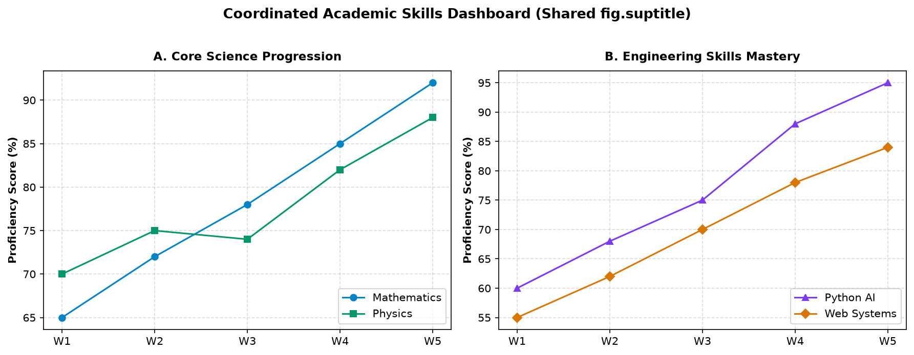
Figure 14.6: Coordinated dashboard with overarching fig.suptitle, dedicated panel titles, explicit Y-axis percentage units, and distinct legends.
Multi-chart layouts mein sabse common problem hoti hai: Subplot 1 ka X-axis label Subplot 2 ke title ke upar overlap ho jana!
Iska universal fix hai fig.tight_layout() jo subplots ke margins aur padding ko automatically calculate karta hai:
# Automatic padding calculation to prevent text collisions
fig.tight_layout(pad=2.0)
# Or manual fine-grained control of whitespace gaps:
fig.subplots_adjust(wspace=0.35, hspace=0.45)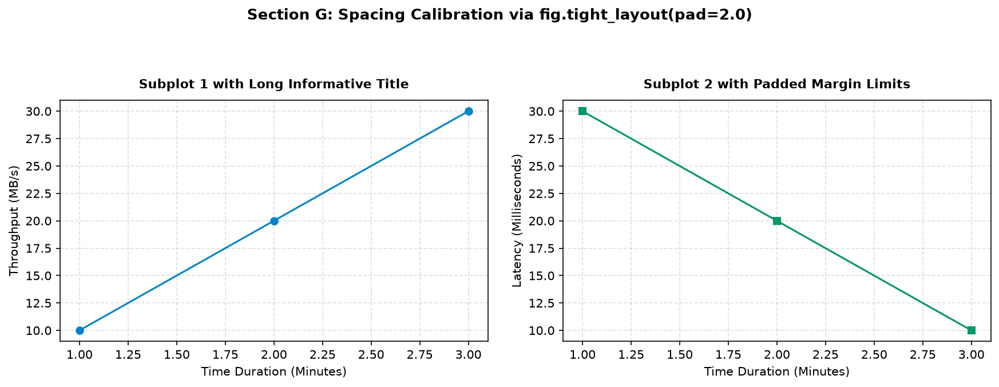
Figure 14.7: Calibrated spacing via fig.tight_layout(pad=2.0). Both subplots breathe comfortably with zero label or title collision.
Agar aapke paas 5 products ka data hai aur aapne 2x3 grid (total 6 spots) create kiya hai, toh 6th spot par empty black box draw ho jayega! Production scripts mein hum loop chala kar data plot karte hain aur extra axes ko ax.set_visible(False) se chhipa dete hain:
fig, axes = plt.subplots(2, 3, figsize=(13, 7.5))
axes_flat = axes.flatten()
# Plot 5 products
for idx, (prod, vals) in enumerate(datasets.items()):
axes_flat[idx].bar(quarters, vals)
# Hide the 6th unused subplot!
axes_flat[5].set_visible(False)
fig.tight_layout()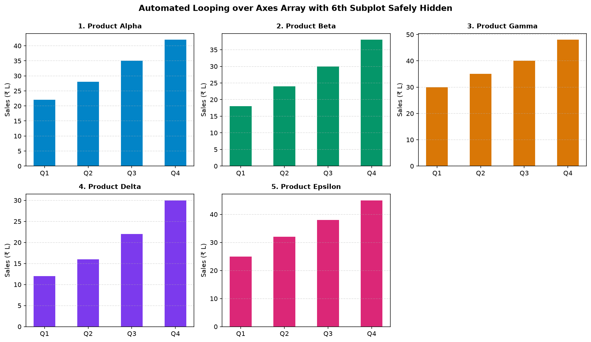
Figure 14.8: Automated loop over 5 product datasets in a 2x3 grid. The 6th unused subplot slot is cleanly hidden with ax.set_visible(False).
E-commerce ya scientific telemetry mein alag-alag questions ke liye alag chart types best hote hain:
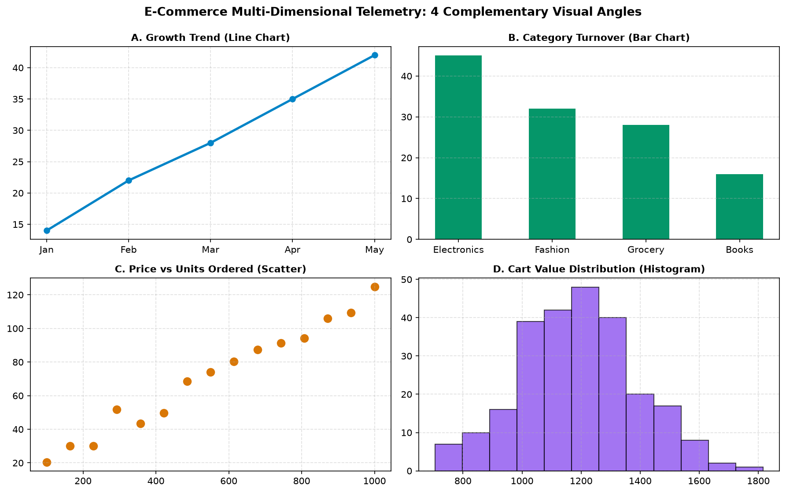
Figure 14.9: Comprehensive 4-quadrant business telemetry: Growth Trend (Line), Category Share (Bar), Price vs Units Ordered (Scatter), and Cart Size Spread (Histogram).
Har dashboard regular uniform grid (jaise 2x2) me fit nahi hota. Kabhi-kabhi aapko ek Hero Master Chart chahiye hota hai jo poore top span par 2 columns cover kare, aur neeche do chote supporting charts hon. Yeh matplotlib.gridspec.GridSpec se banta hai:
import matplotlib.gridspec as gridspec
fig = plt.figure(figsize=(12, 7))
gs = gridspec.GridSpec(2, 2, height_ratios=[1.2, 1.0])
# Top master subplot spanning both columns: [0, :]
ax_top = fig.add_subplot(gs[0, :])
# Bottom-left: [1, 0]
ax_bl = fig.add_subplot(gs[1, 0])
# Bottom-right: [1, 1]
ax_br = fig.add_subplot(gs[1, 1])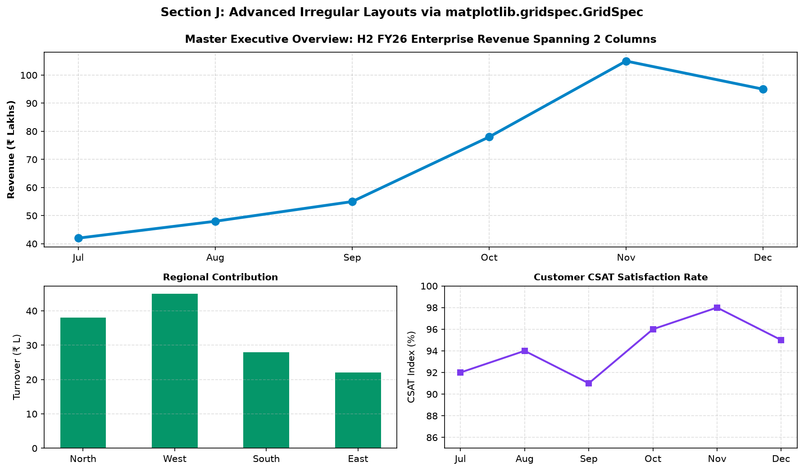
Figure 14.10: Advanced GridSpec architecture. Top hero chart spans both columns showing executive revenue, supported below by regional bars and customer satisfaction curves.
Jab do metrics identical time horizon share karte hain lekin unke units completely alag hote hain—jaise Daily Traffic (Thousands) aur Checkout Conversion Rate (%)—tab hum ax.twinx() use karte hain:
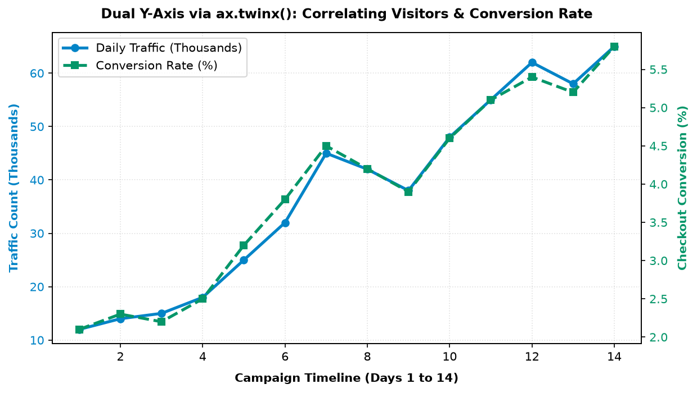
Figure 14.11: Dual Y-Axis via ax.twinx(). Left axis (blue) measures visitor traffic in thousands, while right axis (green) tracks checkout conversion rate percentage with a unified legend.
Secondary X-axis (ax.twiny()) tab useful hota hai jab ek hi horizontal measurement do alag unit systems mein display karni ho—jaise Celsius (°C) aur Fahrenheit (°F):
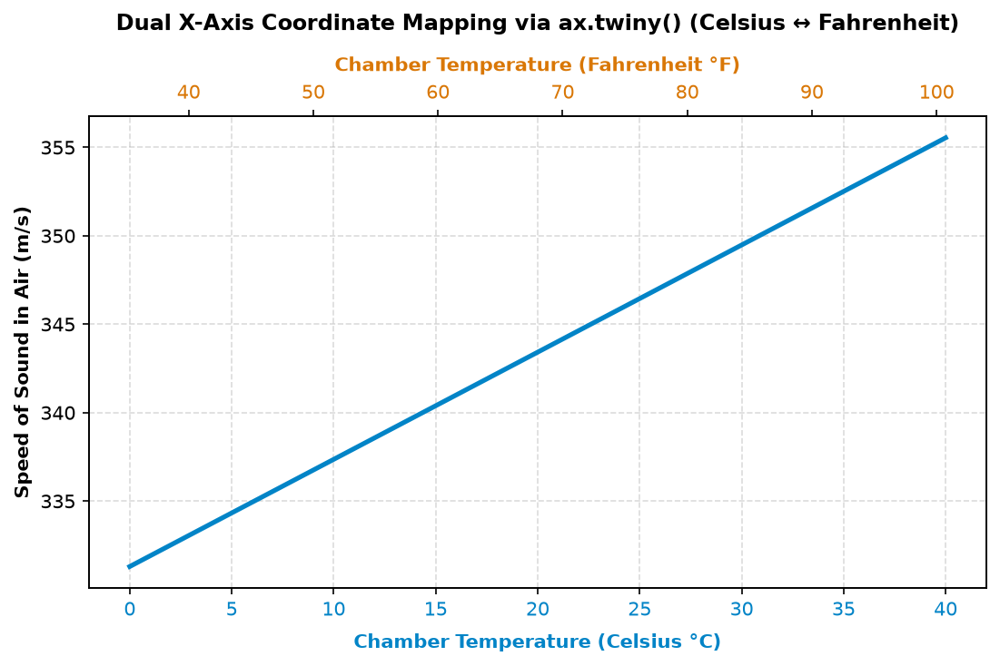
Figure 14.12: Dual X-axis mapping via ax.twiny(). Bottom X-axis shows temperature in Celsius, top X-axis displays corresponding Fahrenheit values for speed of sound measurements.
Scenario: 5 semester subjects ka 4-panel comprehensive evaluation: subject proficiency, lecture attendance, prep time correlation, aur cohort score spread:
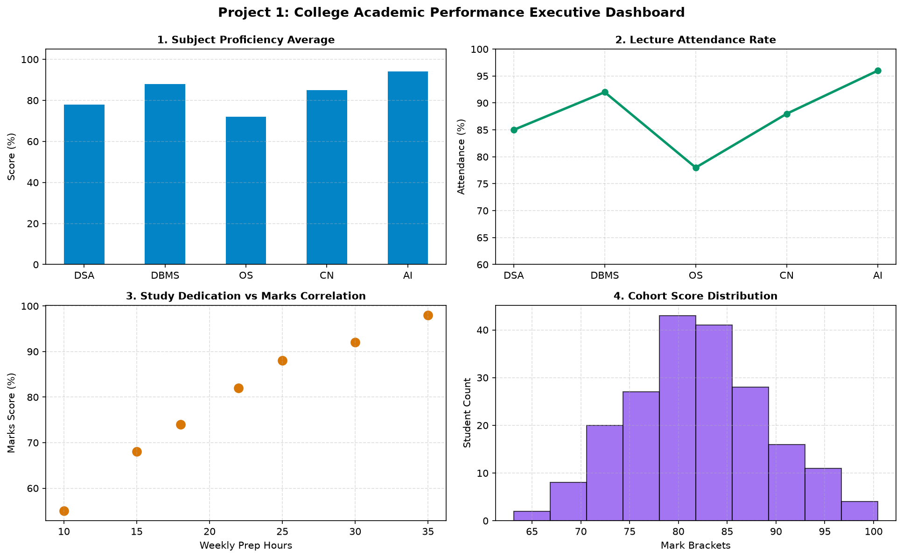
Figure 14.13: Project 1 Dashboard. Four synchronized panels providing complete academic diagnostic insights.
Scenario: Executive quarterly retail overview: gross revenue, order volume, Average Order Value (AOV), aur product category share:
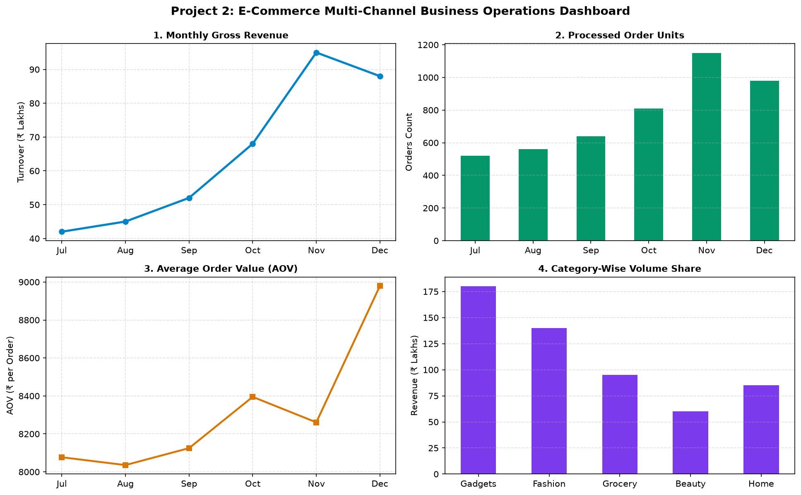
Figure 14.14: Project 2 Dashboard. Financial revenue trajectory, order counts, customer basket size (AOV), and category sales breakdown.
Scenario: 24-hour industrial environment tracking: chamber temperature, relative humidity, dual-probe cross-validation, aur thermal observation frequency:
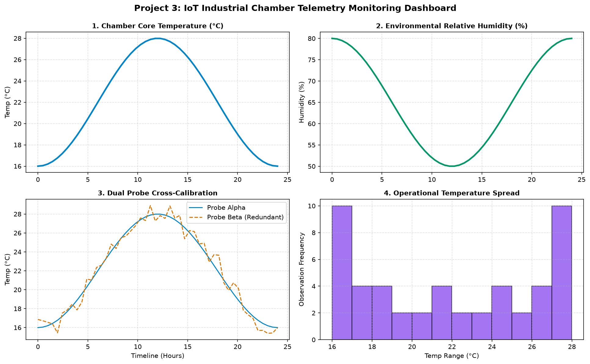
Figure 14.15: Project 3 Dashboard. Coordinated environmental sensor tracking with dual probe cross-calibration.
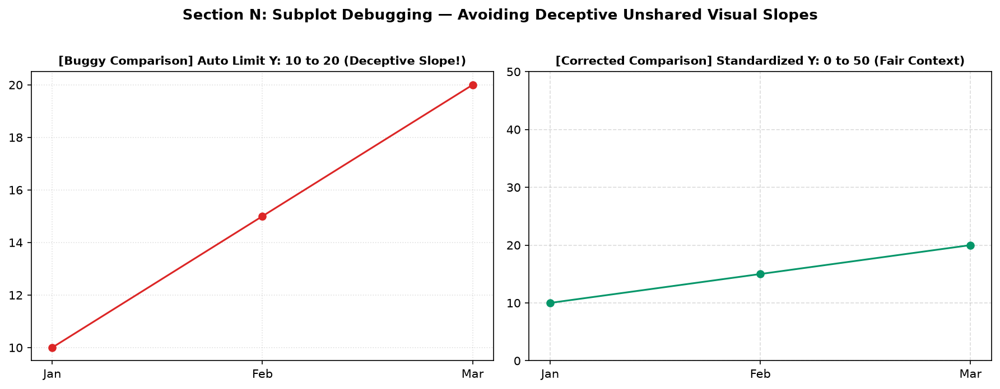
Figure 14.16: Left: unstandardized auto limits make minor changes appear as dramatic slopes. Right: standardized Y-axis limits (0 to 50) restore honest comparative context.
Mistake: plt.subplots(1, 2) me axes[0, 1] access karna.
Fix: 1 row layout 1D array hota hai: axes[0] aur axes[1].
Mistake: Titles aur axis labels ka ek dusre par crash ho jana.
Fix: Always call fig.tight_layout(pad=2.0) before show/save.
Mistake: 5 charts ke liye 2x3 grid banana aur 6th spot par empty black frame chhodna.
Fix: Call axes_flat[5].set_visible(False).
Mistake: fig.suptitle ka top row charts ke labels par overlap ho jana.
Fix: Set y=1.02 and adjust rect=[0, 0, 1, 0.96] in tight_layout.
Jab aap multi-panel dashboards ko PNG image ke roop mein save karte hain, toh production export command follow karein:
# Save the entire multi-panel dashboard without clipping
fig.savefig(
"topic14_dashboard.png",
dpi=150, # High-resolution Retina/mobile display
bbox_inches="tight" # Ensures all outer titles & legends are captured!
)| Method / Tool | Key Purpose | Code Snippet |
|---|---|---|
plt.subplots() |
Standard grid generator | fig, axes = plt.subplots(2, 2, figsize=(12, 8)) |
fig.suptitle() |
Master dashboard title | fig.suptitle("Executive Dashboard", fontsize=14) |
sharey=True |
Synchronizes Y-axis scale across panels | plt.subplots(1, 2, sharey=True) |
fig.tight_layout() |
Automatically fixes margin overlaps | fig.tight_layout(pad=2.0) |
ax.set_visible(False) |
Hides unused subplot boxes | axes_flat[5].set_visible(False) |
GridSpec |
Irregular multi-column spanning | gs = gridspec.GridSpec(2, 2) |
ax.twinx() |
Secondary Y-axis on same canvas | ax2 = ax1.twinx() |
plt.subplots(1, 2) call karne par axes ka dimension kya hota hai?fig, (ax1, ax2, ax3) = plt.subplots(1, 3, figsize=(14, 4)).axes.flatten() use karke ek loop me sabhi 4 plots par gridlines enable karein.for ax in axes.flatten(): ax.grid(True, linestyle='--').sharey=True aur common fig.suptitle.plt.subplots(1, 2, sharey=True) followed by fig.suptitle("Store Comparison", y=1.02).gs = gridspec.GridSpec(2, 2) and ax_top = fig.add_subplot(gs[0, :]).ax.twinx() use karke Daily Website Visitors (Line) aur Server CPU Load (%) (Dashed) plot karein with combined legend.lines = l1 + l2; ax1.legend(lines, [l.get_label() for l in lines]).Subplots aur multi-panel dashboards master karne ke baad Matplotlib ka 3D aur advanced visualization module shuru hota hai: 3D Plotting & Surfaces!
Matplotlib Topic 15: 3D Plots mein aap seekhenge:
projection='3d' aur Axes3D initialization.ax.view_init()), aur 3D colormap surfaces!